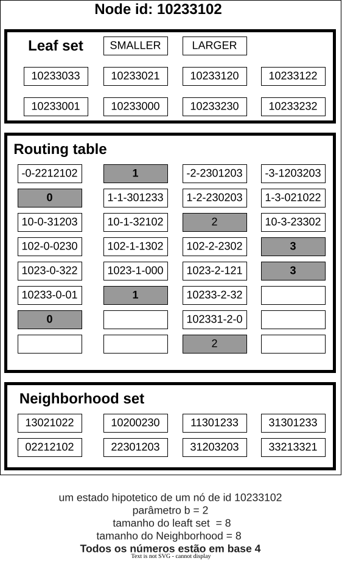
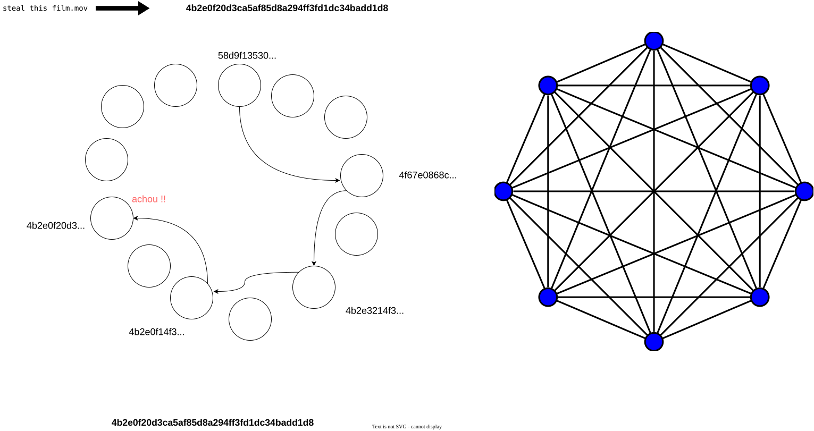

P2P: Pastry
Pastry é uma rede peer to peer (P2P) pensada por Antony Rowstron e Peter Druschel com a ideia de ser um sistema escalável com localização de objetos eficiente em redes potencialmente grandes. Suas aplicações incluem compartilhamento e armazenamento global de dados e comunicações em grupo. Como todo sistema P2P o número de clientes cresce linearmente com o número de servidores, ou seja, cada novo cliente é um novo servidor. Pastry network possui a topologia rede de Overlay estruturada, apesar de possuir uma adição de dados e de nós mais lenta do que uma rede não estruturada, veremos que o seu algoritmo de inserção é eficiente.
| Estruturada | Não-Estruturada |
|---|---|
| Estrutura bem definida | Estrutura aleatória |
| Adição de dados é lenta | Adição de dados é rápida |
| Adição de nós é lenta | Adição de nós é rápida |
| Busca por dados é rápida | Busca por dados lenta |
Roteamento
Na Pastry Network, tanto a adição de dados quanto de nós utilizam o mesmo algoritmo para navegar na rede, esse algoritmo busca ser um trade-off entre tempo-espaço, uma vez que, se compararmos com uma topologia em formato de anel um nó só precisaria armazenar dois nós, mas no pior caso, o roteamento teria que passar pelos \(N\) nós, ou seja , é \(O(N)\), já comparado com um grafo totalmente conectado e seus nós armazenados em uma tabela, o tempo no pior caso, para rotear uma mensagem seria \(O(1)\), mas cada nó teria que ter uma tabela armazenando os outros \(N-1\) nós, o que é impraticável em uma rede grande, já no Pastry o seu algoritmo de roteamento demora \(Log_{2^{b}}N\) passos para encontrar um nó e quantidade de nós varia com o parâmetro \(b\), o tamanho do leaf set e o tamanho do neighborhood set, tipicamente os valores são \(4\), \(2^{b}\) e \(2^{b+1}\), respectivamente.
Estrutura Interna de um Nó Pastry
Um nó Pastry é uma estrutura que possui 2 conjuntos e uma tabela. O conjunto leaf set \(L\) que é uma estrutura necessária e utilizada durante a remoção de um nó, garantindo que a estrutura da rede não se desfaça. O conjunto de vizinhos (neighborhood set) que existe basicamente por causa da internet e seus problemas, como a necessidade de monitorar os outros nós para saber se eles ainda estão vivos e qual é a distância entre os nós. A tabela de roteamento que é a estrutura chave para o algoritmo de roteamento.


Algoritmo de roteamento
- Seja um no de \(id\) com valor \(A\)
- uma mensagem com uma chave de valor \(D\)
- \(R^{i}_{l}\) o valor de uma tabela \(R\) onde \(i\) é sua coluna e \(l\) a sua linha
- \(L_i\) o i-ésimo \(id\) do conjunto de folhas \(L\), \(-[\frac{|L|}{2}] \leq i \leq [\frac{|L|}{2} ]\), onde índices positivos e negativos indicam \(id\)s menores ou maiores que o \(id\) \(A\), respectivamente.
- \(D_{l}\) o valor do l-ésimo dígito da chave \(D\)
- \(plength(A,B)\) uma função que calcula o tamanho do prefixo compartilhado entre os ids \(A\) e \(B\)
- \(M\) o conjunto de nós vizinhos
- se \(L_{-[\frac{|L|}{2}]}\) \(\leq D \leq\) \(L_{[\frac{|L|}{2}]}\), ou seja, se o \(id\) da mensagem pertence ao conjunto de \(ids\) dos nós folha, então:
- repasse a mensagem para o nó de \(id\) \(L_i\) onde \(| D - L_i|\) é minimo
- Caso contrário use a tabela de rotas:
- \(l = plength(D,A)\)
- se \(R^{D_l}_{l} \neq null\)
- repasse a mensagem para o nó \(R^{D_l}_{l}\)
- caso contrário, ou seja, caso não for possível encaminhar a mensagem para \(R^{D_l}_{l}\) ou essa celula da tabela esteja vazia:
- repasse a mensagem para o nó \(T\) tal que \(T \in L \cup R \cup M\) e que \(plength(T,D) \geq l\), \(|T- D| < |A -D|\), ou seja \(T\) é o nó que está em um dos conjuntos: Vizinhança, folha, tabela, que possui um prefixo compartilhado maior ou igual ao prefixo compartilhado do nó de id \(A\)
Auto organização e adaptação
Para uma rede como Pastry todas as suas vantagens estão estritamente ligadas a sua estrutura, então é imprescindível que em momentos de inserção ou saída de um nó a rede consiga se organizar de tal forma que garanta as suas propriedades
Inserção de um nó
Procedimento para inserir um novo nó
-
assumimos que o novo nó, o nó \(X\) conhece o seu nó mais próximo considerando alguma métrica de distância, o nó \(A\)
-
gera-se o \(id\) através do cálculo do hash SHA-1 sobre o seu endereço ip ou com a sua chave pública
-
Pastry Network passa a rotear uma mensagem especial join, onde assim como qualquer mensagem, Pastry busca encontrar o nó mais próximo numericamente do \(id\), que no caso é o \(id\) do novo nó
-
cada nó encontrado durante o roteamento envia para o novo nó sua tabela estado (Leaf set, Routing table, Neighborhood set) adicionado na tabela estado do novo nó
- assumindo que nó \(A\) é o mais próximo de \(X\), então inicializamos o conjunto de vizinhos de \(X\) com os vizinhos de \(A\)
- considerando que o nó \(Z\) é o nó com o \(id\) mais proximo de \(X\), então o conjunto de nós folhas (leaf set) de \(Z\) inicializa o leaf set de \(X\)
- Considerando que \(A_i\) significa a i-ésima linha da tabela de rotas de A e sabendo que a linha 0 de uma tabela de rotas independe do seu respectivo node \(id\) então, podemos atribuir \(X_0 = A_0\), sabendo que o nó \(B\) foi o nó depois de \(A\), logo \(B\) já possui um prefixo em comum então podemos atribuir \(X_1 = B_1\), sabendo que \(C\) foi o nó depois de \(B\) então podemos atribuir \(X_2 = C_2\), e assim sucessivamente até achegar em \(Z\)
Perceba que a inserção utiliza do algoritmo de roteamento, e apesar de ao final ele enviar uma cópia do seu estado para todos os nós, são todos os nós que ele tem alguma proximidade e não todos os nós da rede e essa quantidade de nós é um parâmetro constante da rede, logo a complexidade da inserção é \(O(logN)\), onde \(N\) é o número de nós em uma rede pastry.
Saída de um nó
Em um dado momento nós podem pedir para sair ou falharem sem nenhum tipo de aviso. A rede Pastry considera que um nó falhou no momento que os nós vizinhos não conseguem mais se comunicar com esse nó. Dado um nó \(A\) que possui um leaf set \(L\), caso esse nó precise repor um nó do leaf set que falhou. então o nó \(A\) contacta o nó de \(L\) com o maior index possível, seja ele positivo ou negativo, por exemplo se o nó \(L_i\), dado que \([\frac{|L|}{2}] < i < 0\). então o nó \(A\) irá enviar uma mensagem para o nó \(L_{-[\frac{|L|}{2}]}\), pedindo o seu conjunto leaf set \(L^{'}\), depois o nó \(A\) escolhe um nó que não pertence ao seu conjunto \(L\) e o adiciona, lembrando que \(A\) remove o nó falho do conjunto \(L\). Perceba que o conjunto de vizinhos (neighborhood set) de um nó exerce um papel importante de ficar em constante troca de mensagens, para verificar se um dado nó ainda está vivo.
Atualização da tabela de rotas de um nó
Perceba que durante a saída de um nó a tabela de roteamento não é modificada, isso se dá porque Pastry adota uma solução em que essa atualização ocorre durante o roteamento. Durante o roteamento um dado nó \(A\) pode conter uma célula vazia, ou seja, \(R^{d}_{l} = null\), ou esse não é possível de ser contactado, o nó \(A\) pede para um outro nó de mesma linha, como por exemplo: \(R^{i}_{l}, i\neq d\) o seu nó \(R^{d}_{l}\), e se \(R^{i}_{l}\) também for nulo, então \(A\) contacta \(R^{i}_{l+1}\) e assim sucessivamente.
localidade
Um ponto importante no algoritmo de inserção é assumir que conhecemos o nó mais próximo a partir de alguma métrica de distância, então se analisarmos o fato que \(X\) copiou a linha 0 de \(A\) e \(A\) em algum ponto copiou a linha 0 do seu nó mais próximo, podemos perceber que todos os nós da linha 0 são relativamente próximos de \(X\), mas e a linha 1? Bom, se olharmos o pior caso que é sendo \(A\) não tendo nenhum prefixo compartilhado com \(X\), logo \(B\) é um dos nós da linha 0 de \(A\), então \(B\) está próximo de \(A\) que está próximo de \(X\) , então quando \(X_1\) recebe \(B_1\), ele recebeu os nós que estão a um nó mais próximo dele, da mesma forma que quando \(B\) foi criado, ele recebeu os nós a 1 nível de distância dele, o mesmo se aplica a \(X_3\) e \(C_3\) e assim por diante até \(X\) receber o leaf set \(Z\), podemos dizer que durante a inserção de um nó, estamos sempre escolhendo a menor distância local e que ela não garante o mínimo global. Com o passar do tempo novos nós podem ser inseridos e removidos, ou até mesmo a métrica de distância pode variar com o tempo, logo periodicamente o nó \(A\) envia mensagens para todos os nós da tabela enviarem sua tabela estado, onde ele compara os nós e caso encontre um nó que tenha o mesmo tamanho de prefixo e um valor da métrica de distância inferior, então o nó \(A\) atualiza a sua tabela com esse novo nó.
Referências
Caso de Estudo feito por um Ex estudante Samuel Cavalcanti
Artigo do Pastry Network, Pastry: Scalable, decentralized object location and routing for large-scale peer-to-peer systems
Vídeo do youtube explicando o algoritmo de roteamento, Routing in Distributed Hash Tables | Anne-Marie Kermarrec
Vídeo do youtube explicado a auto organização da rede, Dynamic Distributed Hash Tables | Anne-Marie Kermarrec